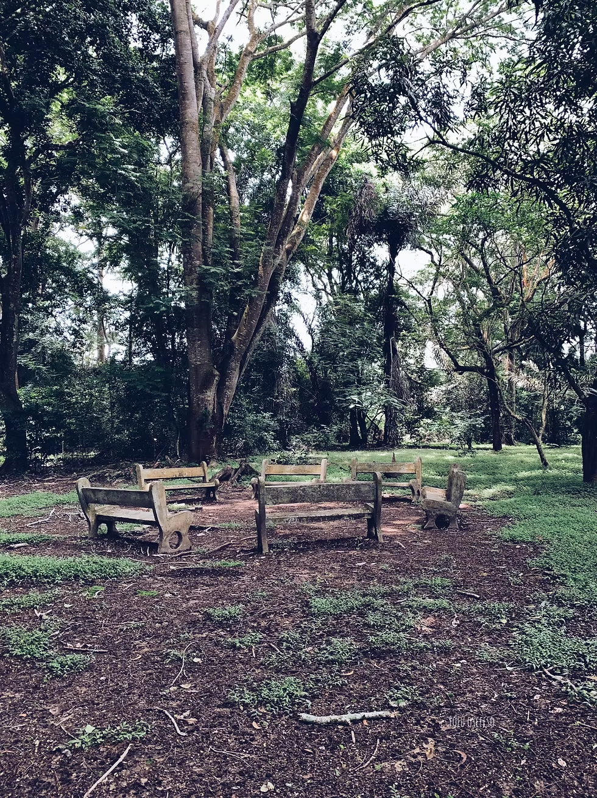
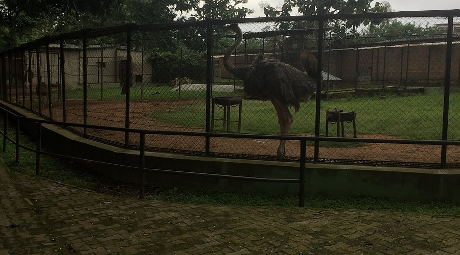
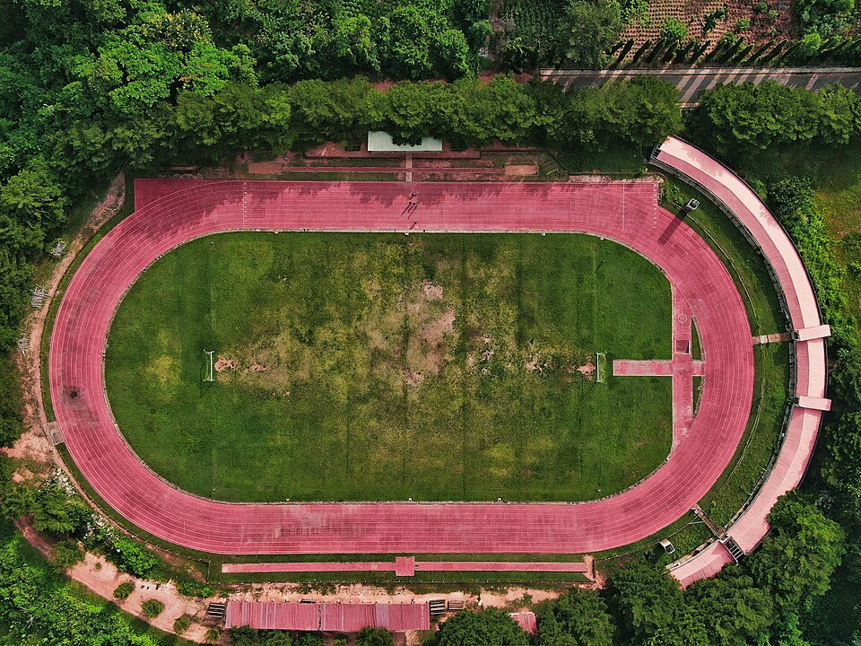
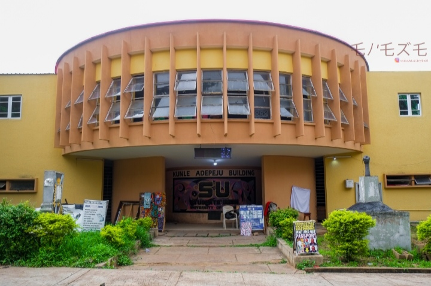

Are you a fresher, a staylite, a visitor or you reside around the University of Ibadan and have been looking for better places to cool your head or visit? Worry no more because here are five amazing places you can hangout or visit for fun even with your lover.
-
The Botanical Gardens

The University of Ibadan Botanical Gardens is a lush oasis! 🌳 As a popular tourist spot, it offers a tranquil escape from the city's chaos. Stroll through the scenic paths, admiring towomaniac collection of plants, trees, and flowers 🌺. The gardens feature a variety of species, including towering palms, vibrant hibiscus, and fragrant frangipani 🌴.
Visitors can explore the medicinal plant section, learn about Nigeria's flora, or simply relax under the shade of a giant tree 🌳. The gardens are perfect for picnics, photography, or nature walks 📸. Birdwatchers will spot various species flinging about, adding to the serene vibe 🐦.
With its peaceful atmosphere, beautiful landscapes, and educational opportunities, the UI Botanical Gardens is a must-visit for nature lovers, students, and anyone seeking calm 😌. Whether you're into plants, photography, or just unwinding, this hidden gem is worth a visit! -
The Zoological Gardens

The University of Ibadan Zoological Gardens is a hidden gem! 🌳 As a popular tourist spot, the zoo offers a serene escape from the city's hustle. Visitors can explore the diverse wildlife, including lions, monkeys, crocodiles, and a variety of bird species 🦁🐒.
The lush greenery and scenic paths make it perfect for picnics, strolls, or nature photography 📸. The reptile house is a must-see, with pythons and other scaly friends 🐍. Visitors can also catch a glimpse of the zoo's resident celebrities – the playful monkeys swinging from trees 🐒.
With its peaceful atmosphere, family-friendly vibe, and affordable entry fees, the UI Zoological Gardens is a great spot for locals and tourists alike to connect with nature 🌴. Whether you're an animal lover, a student, or just looking for a chill outing, this zoo has something for everyone! -
The AWBA Dam
The AWBA Dam is a scenic spot located within the University of Ibadan campus. It offers a peaceful environment for relaxation and recreation. The dam is surrounded by lush greenery, making it an ideal place for picnics, jogging, or simply enjoying nature. Visitors can also take photographs of the serene waters and the surrounding landscape. The calm atmosphere makes it a perfect escape from the busy campus life.
-
The AWO Football Field

The AWO Football Field is a vibrant hub of activity within the University of Ibadan campus. It's a place where students, staff, and visitors come together to enjoy sports and socialize. The field is well-maintained and offers a perfect setting for football matches, training sessions, and recreational games. With its spacious layout and modern facilities, it's a favorite spot for both athletes and casual observers. Whether you're playing or watching, the AWO Football Field is a lively place that brings the campus community together.
-
The Student Union Building

The Student Union Building is a central hub of activity within the University of Ibadan campus. It serves as a gathering place for students, staff, and visitors to engage in various academic and social activities. The building houses multiple departments, meeting rooms, and recreational facilities. It's a symbol of student life and unity on campus, where important decisions are made and events are organized. The building's architecture reflects the university's commitment to providing a modern and functional environment for its community.